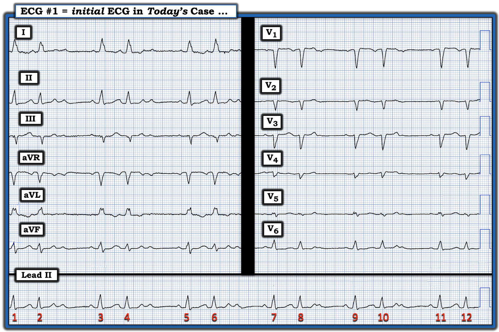
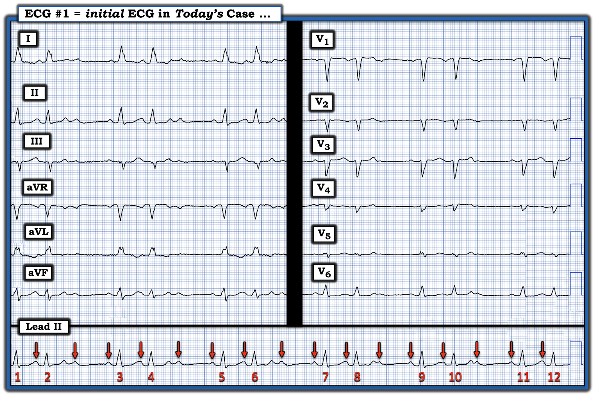
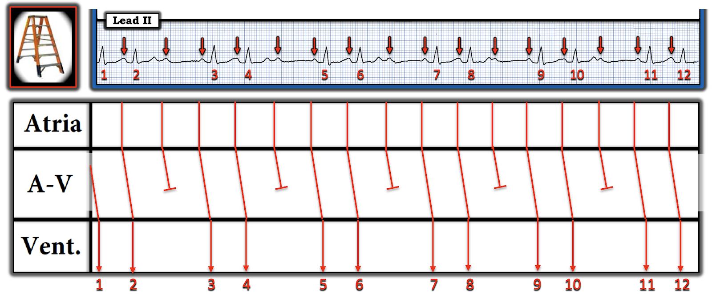
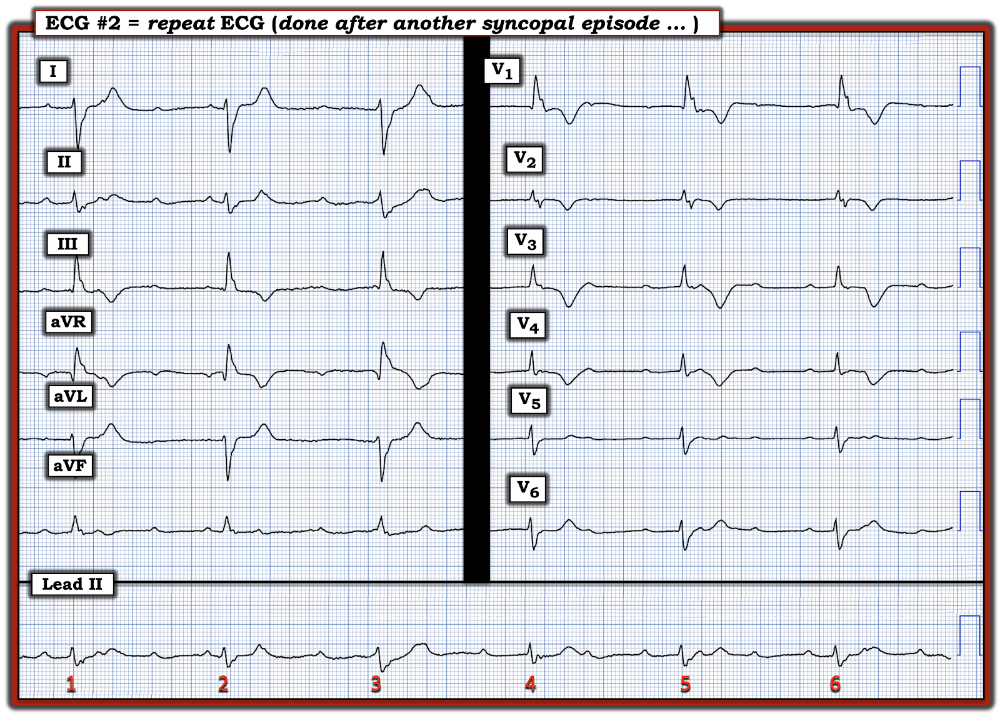
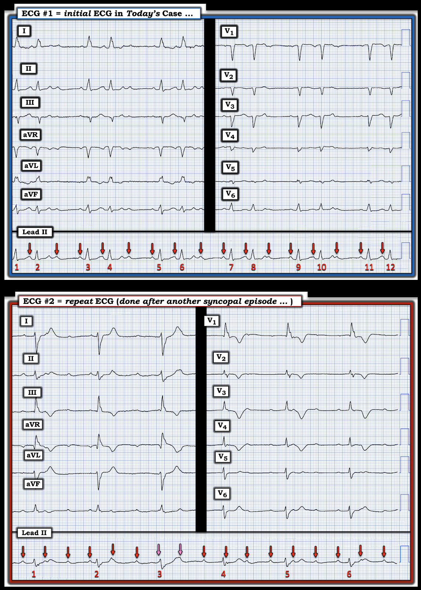
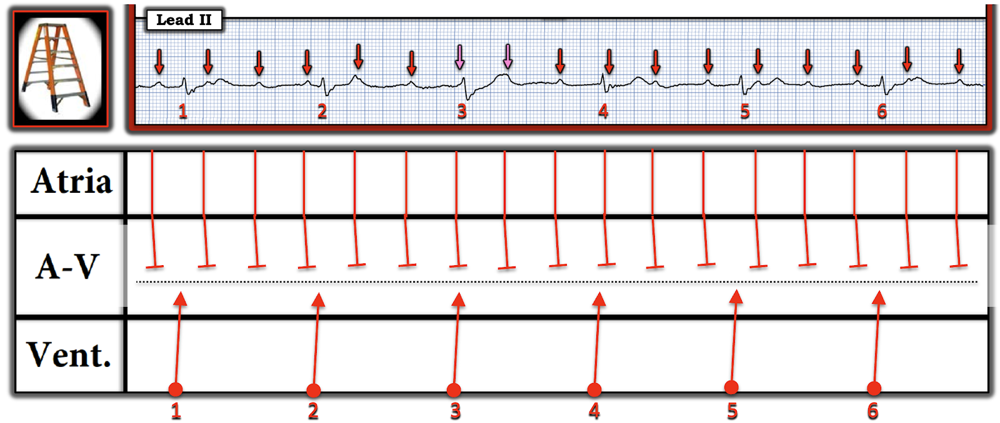

ECG Blog #465 — Chuyện một ca ngất & 2 nhịp
Điện tâm đồ ở Hình-1 được ghi từ một phụ nữ lớn tuổi đến khoa cấp cứu (Emergency Department) vì một cơn ngất (syncopal episode). Bà không có triệu chứng vào thời điểm ghi điện tâm đồ này.
CÂU HỎI:
- BẠN sẽ đọc điện tâm đồ ở Hình-1 như thế nào?
- Có blốc AV không? Nếu có — Loại nào?


SUY NGHĨ CỦA TÔI về Hình-1:
Như thường lệ — tôi ưa dùng Cách tiếp cận Ps, Qs, 3R như một cách tiết kiệm thời gian tối ưu để đánh giá bất kỳ rối loạn nhịp nào, kể cả các blốc AV (Xem ECG Blog #185).
- Như thấy ở dải nhịp chuyển đạo II dài phía dưới Hình-1 — Nhịp (Rhythm) không đều một cách đều đặn (regularly irregular) (tức là có nhịp theo nhóm (group beating), với các chu kỳ ngắn-dài lặp lại). Vì vậy — Tần số (Rate) của nhịp không cố định, dù tần số thất chung không quá nhanh.
- Sóng P có hiện diện.
- Phức bộ QRS rộng (tức là thời gian hơn nửa ô lớn). Nhìn vào điện tâm đồ 12 chuyển đạo nằm phía trên dải nhịp chuyển đạo II dài — hình dạng QRS có vẻ phù hợp với dẫn truyền kiểu LBBB (blốc nhánh trái — Left Bundle Branch Block), vì QRS dương hoàn toàn ở các chuyển đạo bên trái I,V6 — và âm là chủ yếu ở chuyển đạo bên phải V1, cũng như ở các chuyển đạo ngực trước khác.
Như vậy ta còn phải đánh giá Thông số thứ 5 — tức là xác định xem những sóng P hiện có có Liên quan (Related) với các phức bộ QRS kế cận hay không?
- Để trả lời câu hỏi này — tôi đã đánh dấu các sóng P thấy được trên dải nhịp chuyển đạo II dài bằng mũi tên ĐỎ (Hình-2).
- ĐIỂM THEN CHỐT (PEARL) #1: Để dễ xác định xem có sóng P nào bạn thấy đang được dẫn truyền hay không — Hãy đánh dấu các sóng P bạn nhận ra! Chẳng phải bước đơn giản là đánh dấu sóng P giúp ta xác định dễ hơn những sóng P nào có (hoặc không) liên quan với các phức bộ QRS kế cận sao?


Sóng P có Liên quan với các phức bộ QRS Kế cận không?
Hãy tập trung vào các phức bộ QRS kết thúc mỗi khoảng ngưng ở Hình-2 (tức là các nhát #3,5,7,9 và 11).
- Chẳng phải khoảng PR đi trước các nhát #3,5,7,9,11 là hằng định sao? Điều này cho ta biết mỗi nhát này đều được dẫn truyền xuống thất. (LƯU Ý: Dù ta không nhìn thấy đủ xa phía trước nhát #1 để đánh giá khoảng PR — nhờ sự tương đồng với kiểu hình chung trên bản ghi này, ta có thể giả định rằng nhát #1 cũng được dẫn truyền xuống thất).
- Tiếp theo — Hãy tập trung vào nhát thứ 2 trong mỗi nhóm (tức là các nhát #2,4,6,8,10,12). Dù hơi khó nhận định vì sóng P phía trước mỗi nhát này bị che khuất một phần trong sóng T đi trước — Chẳng phải có vẻ như khoảng PR trước các nhát #2,4,6,8,10,12 cũng hằng định, đồng thời bằng khoảng PR trước các nhát #1,3,5,7,9,11 sao?
Để cho rõ ràng, ở Hình-3 — tôi đã vẽ giản đồ bậc thang (laddergram) của dải nhịp chuyển đạo II dài từ điện tâm đồ ban đầu của ca hôm nay. Lưu ý những điểm sau:
- Nhịp theo nhóm (các nhóm 2 nhát lặp lại suốt bản ghi).
- Nhịp nhĩ khá đều (dù không hoàn toàn đều).
- QRS giãn rộng (mà ta đã xác định là phù hợp với dẫn truyền kiểu LBBB).
- Cả 12 phức bộ QRS ở Hình-3 đều có sóng P đi trước với cùng một khoảng PR hằng định (tức là độ dốc của các đường ĐỎ trong Tầng Nút AV không đổi).
- Khoảng PR của các nhát được dẫn truyền không kéo dài.
- Cứ mỗi sóng P thứ 3 thì không được dẫn truyền (tức là cứ mỗi sóng P thứ 3 không đi ra khỏi được Tầng Nút AV).
Kết luận: Phát hiện nhịp nhĩ khá đều với một hoặc nhiều sóng P đúng lúc không dẫn truyền được xuống thất xác định nhịp ban đầu của ca hôm nay là một dạng blốc AV độ 2.
- CÂU HỎI: Blốc AV độ 2 loại nào?


ĐIỂM THEN CHỐT (PEARL) #2: Như được ôn lại chi tiết trong PHẦN BỔ SUNG bên dưới — có 3 Loại blốc AV độ 2. Đó là:
- Mobitz I, blốc AV độ 2 ( = Wenckebach AV) — trong đó khoảng PR tăng dần cho đến khi một nhát bị rớt.
- Mobitz II — trong đó khoảng PR giữ hằng định đối với các nhát được dẫn truyền liên tiếp cho đến khi một hoặc nhiều phức bộ QRS không được dẫn truyền.
- Blốc độ 2 với blốc AV 2:1 — trong đó, do ta không bao giờ thấy 2 nhát được dẫn truyền liên tiếp — Ta không thể biết liệu khoảng PR có kéo dài ra trước khi rớt một nhát hay không NẾU có cơ hội để làm vậy.
- ĐIỀU CỐT LÕI: Theo các định nghĩa trên — nhịp ở Hình-3 có vẻ là thể Mobitz II của blốc AV độ 2 vì: i) QRS rộng; ii) Các sóng P xoang đúng lúc không được dẫn truyền xuống thất (điều này xảy ra với cứ mỗi sóng P thứ 3 ở Hình-3); — và, iii) Khoảng PR giữ hằng định đối với các nhát được dẫn truyền liên tiếp.
- Điểm MẤU CHỐT: Việc phân biệt giữa thể Mobitz I và Mobitz II của blốc AV độ 2 là quan trọng — vì diễn tiến lâm sàng của Mobitz I thường khá lành tính — trong khi bệnh nhân Mobitz II có khả năng cần máy tạo nhịp vĩnh viễn cao hơn nhiều.
ĐIỂM THEN CHỐT (PEARL) #3: Có một số Manh mối điện tâm đồ và lâm sàng có thể giúp xác định XEM loại blốc AV độ 2 bạn đang xem nhiều khả năng là blốc Mobitz I hay Mobitz II. Các manh mối này bao gồm:
- Mobitz II hiếm gặp. Theo kinh nghiệm của tôi — hơn hẳn 90-95% tổng số blốc AV độ 2 rốt cuộc sẽ là Mobitz I.
- Trong Mobitz II, phức bộ QRS phần lớn là rộng. Vì vậy — Mobitz II rất khó xảy ra nếu QRS không rộng. Ngược lại — trong Mobitz I, QRS phần lớn là hẹp (dù có ngoại lệ NẾU bệnh nhân Mobitz I có sẵn blốc nhánh từ trước).
- Mobitz I phần lớn liên quan với nhồi máu thành dưới cấp hoặc mới xảy ra. Ngược lại — Mobitz II phần lớn liên quan với nhồi máu thành trước.
- Khoảng PR của các nhát được dẫn truyền trong Mobitz I thường kéo dài (đôi khi kéo dài rõ rệt). Ngược lại — khoảng PR của các nhát dẫn truyền trong Mobitz II thường là bình thường hơn, hoặc chỉ kéo dài tối thiểu.
- Ít khả năng chuyển đổi qua lại từ Mobitz I sang Mobitz II (hoặc ngược lại). Do đó, NẾU khi xem lại dữ liệu theo dõi bổ sung của bệnh nhân mà bạn thấy bằng chứng rõ ràng của Mobitz I (tức là khoảng PR kéo dài dần cho đến khi một nhát bị rớt) — thì nhiều khả năng mọi bản ghi của bệnh nhân đó (kể cả những bản ghi có blốc AV 2:1) — cũng là Mobitz I.
Về Ca bệnh hôm nay ...
- Vì hàm ý rằng sẽ cần tạo nhịp nếu nhịp của ca hôm nay là Mobitz II — Ta muốn chắc chắn hết mức có thể rằng khoảng PR không tăng dần qua các nhát được dẫn truyền liên tiếp. Như đã nói ở trên — khó mà chắc chắn điều này ở Hình-2, vì khởi đầu của sóng P thứ 2 trong mỗi nhóm 2 nhát bị che khuất một phần trong sóng T đi trước.
- Điện tâm đồ 12 chuyển đạo ở Hình-2 có cho thấy LBBB — nhưng không có dấu hiệu rõ ràng của nhồi máu cấp, mới xảy ra hoặc cũ.
- Kết luận: Tôi rất nghi ngờ nhịp này là Mobitz II — nhưng tôi không thể chắc chắn 100% điều này chỉ từ một điện tâm đồ duy nhất này.
===========================
Ca bệnh Tiếp diễn:
Bệnh nhân của ca hôm nay lại bị thêm một cơn ngất. Điện tâm đồ của bà lúc đó được trình bày ở Hình-4.
CÂU HỎI:
- BẠN sẽ đọc điện tâm đồ ở Hình-4 như thế nào?
- Có blốc AV không? Nếu có — Loại nào?


SUY NGHĨ CỦA TÔI về Hình-4:
Nhịp ở Hình-4 giờ chậm hơn, nhưng đều. Khoảng R-R dài ~8 ô lớn — tương ứng với tần số thấp hơn 40/phút một chút. Có thấy sóng P. QRS rõ ràng là rộng.
- Theo ĐIỂM THEN CHỐT #1 — Việc đánh giá xem sóng P có (hoặc không) liên quan với các phức bộ QRS kế cận được thực hiện dễ nhất bằng cách đánh dấu sóng P — điều tôi đã làm ở Hình-5.

Sóng P ở Hình-5 có Liên quan với QRS không?
Ở Hình-5 — tôi đã đánh dấu bằng mũi tên ĐỎ những sóng P mà ta có thể dễ dàng nhận ra. Dù khoảng P-P có thay đổi nhẹ — kiểu loạn nhịp xoang theo pha thất (ventriculophasic) này thường gặp trong blốc AV độ 2 và độ 3.
- Vì hợp lý hơn khi nhịp nhĩ nền vẫn giữ đều (thay vì đột ngột rớt mất vài nhát) — tôi đã thêm mũi tên HỒNG ở Hình-5 tại những chỗ tôi dự đoán sẽ tìm thấy 2 sóng P nữa. (Biến dạng nhẹ ở đầu QRS của nhát #3 — và ở cuối sóng T của nhát #3 — gợi ý mạnh rằng sóng P thực sự nằm bên dưới 2 mũi tên HỒNG này).
Tổng hợp lại những gì ta đã xác định ở Hình-5:
- QRS rộng.
- Nhịp thất về cơ bản là đều (với thay đổi nhỏ của khoảng R-R do loạn nhịp xoang theo pha thất). Tần số thất chỉ dưới 40/phút một chút.
- Có một nhịp nhĩ gần như đều (các mũi tên màu ở Hình-5). Tập trung vào các sóng P trước mỗi nhát trong 6 nhát của dải nhịp chuyển đạo II dài — khoảng PR liên tục thay đổi. Như vậy, sóng P “đi xuyên qua” QRS — đến mức có vẻ như có phân ly nhĩ thất hoàn toàn (tức là Không sóng P nào ở Hình-5 được dẫn truyền xuống thất).
ĐIỂM THEN CHỐT (PEARL) #4:
Rõ ràng, có ít nhất blốc AV độ 2 ở Hình-5 — vì nhiều sóng P đúng lúc không được dẫn truyền xuống thất (tức là Trên bản ghi này có nhiều sóng P hơn hẳn phức bộ QRS).
- Như đã bàn trong ECG Blog #405 — MẤU CHỐT để xác định có blốc AV hoàn toàn (độ 3) hay không là: i) Có nhịp nhĩ nền đều (hoặc gần như đều) hay không; và, ii) Có phải tất cả sóng P đều không dẫn truyền được mặc dù có đủ cơ hội để dẫn truyền hay không. Để thỏa mãn các điều kiện này — dải nhịp phải đủ dài để sóng P rơi vào mọi phần của khoảng R-R, mà vẫn không dẫn truyền được.
- ĐIỂM THEN CHỐT (PEARL) #5: Các nhịp thoát từ Nút AV, bó His hoặc từ thất — có xu hướng đều. Vì vậy — manh mối TỐT NHẤT gợi ý rằng blốc AV không hoàn toàn — là khi nhịp thất không đều. Sự xuất hiện của một hoặc nhiều phức bộ QRS sớm hơn dự kiến thường có nghĩa là những nhát sớm đó đang được dẫn truyền.
- Kết luận: Vì vậy, tôi rất nghi ngờ nhịp ở Hình-5 là blốc AV hoàn toàn vì: i) QRS rộng; ii) Tần số thất chậm và đều; iii) Tần số nhĩ đều; — và, iv) Không sóng P nào có vẻ được dẫn truyền xuống thất mặc dù nhiều sóng P đúng lúc này rơi vào những phần của chu kỳ mà ở đó ta kỳ vọng sóng P có thể dẫn truyền được.
- Vượt ra ngoài phần cốt lõi: Về mặt kỹ thuật, ta không thể loại trừ khả năng một số sóng P có thể dẫn truyền được nếu "có cơ hội" — vì ta chưa thực sự thấy sóng P rơi vào mọi phần của khoảng R-R. Để thấy được điều này — có lẽ ta cần theo dõi thêm 20-30 giây nữa. Dù vậy — việc các sóng P liên tiếp không dẫn truyền được ở nhiều điểm trên dải nhịp 10 giây này gợi ý ít nhất là có blốc AV mức độ cao (nếu không phải hoàn toàn).
CÂU HỎI:
Hãy NHÌN lại 2 điện tâm đồ của ca hôm nay. Để dễ so sánh — tôi đã đặt các bản ghi này cạnh nhau ở Hình-6.
- BẠN có để ý phức bộ QRS trông khác nhau thế nào trên mỗi bản ghi không? — TẠI SAO lại như vậy?
- Còn hình dạng sóng ST-T ở điện tâm đồ #2 thì sao?


TRẢ LỜI: Hình dạng QRS ở điện tâm đồ #1 (bản ghi PHÍA TRÊN) phù hợp với dẫn truyền kiểu LBBB (tức là dương hoàn toàn ở các chuyển đạo bên trái I và V6 — nhưng âm là chủ yếu ở các chuyển đạo ngực trước). Khoảng PR hằng định đi trước mỗi nhát ở điện tâm đồ #1 cho ta biết mỗi phức bộ trong 12 phức bộ QRS trên bản ghi này đều được dẫn truyền — dù cứ mỗi sóng P thứ ba thì không. Như vậy, nhịp ở điện tâm đồ #1 là blốc AV độ 2 (không phải độ 3).
- Ngược lại — phức bộ QRS rộng hơn ở điện tâm đồ #2, với hình dạng QRS rất khác (tức là giống dẫn truyền kiểu RBBB ở chuyển đạo V1 — dù với trục lệch phải rõ rệt ở các chuyển đạo chi). Kết hợp với tần số thất chậm hơn nhiều và khoảng PR liên tục thay đổi suốt bản ghi này — điều này gợi ý giờ đây có một ổ "thoát" thất (điều này ủng hộ giả định của chúng ta rằng nhịp giờ đây là blốc AV hoàn toàn).
- Nếu có sóng P nào ở điện tâm đồ #2 được dẫn truyền — ta sẽ kỳ vọng thấy hình dạng dẫn truyền kiểu LBBB như đã thấy ở điện tâm đồ #1 quay trở lại .
- Giản đồ bậc thang ở Hình-7 minh họa theo sơ đồ việc mọi xung động nhĩ đều không dẫn truyền được ở điện tâm đồ #2 — vì giờ đây có blốc AV hoàn toàn (đường chấm chấm trong Tầng Nút AV) — với hệ quả là nhịp "thoát" thất chậm.


Để kết thúc ca bệnh — Hãy NHÌN lại hình dạng sóng ST-T ở điện tâm đồ #2 (bản ghi PHÍA DƯỚI ở Hình-6). Dù không phức bộ QRS nào trên bản ghi này được dẫn truyền — Chẳng phải hình dạng sóng ST-T trông bất thường sao? (tức là Có đoạn ST dạng vòm (coving) với sóng T đảo ngược sâu hơn dự kiến ở các chuyển đạo V1 đến V4).
- Có thể lý do khiến nhịp tim chậm hơn và tiến triển thành blốc AV hoàn toàn là hậu quả của một biến cố mới xảy ra. Cần làm troponin nhiều lần và các điện tâm đồ liên tiếp để loại trừ nhồi máu cơ tim cấp hoặc mới xảy ra.
=================================
Tóm tắt Ca bệnh Hôm nay:
Bệnh nhân của ca hôm nay là một phụ nữ lớn tuổi đến khoa cấp cứu vì một cơn ngất. Dù bà không có triệu chứng vào thời điểm ghi điện tâm đồ ban đầu — bản ghi ban đầu này (trình bày ở Hình-1) cho thấy nhiều sóng P không được dẫn truyền do blốc AV độ 2 loại Mobitz II.
- Như đã nhấn mạnh — hàm ý lâm sàng của Mobitz II rõ ràng đáng lo ngại hơn so với blốc AV độ 2 loại Mobitz I phổ biến hơn nhiều. Vì lý do này — thường sẽ cần tạo nhịp vĩnh viễn khi nhịp là Mobitz II.
Sau đó bệnh nhân của ca hôm nay bị cơn ngất lần thứ 2. Điện tâm đồ ghi lại của bà vào lúc này (trình bày ở Hình-4) — giờ cho thấy blốc AV hoàn toàn, với nhịp "thoát" thất chậm.
- Diễn tiến Cuối Cùng: Đã loại trừ biến cố mới xảy ra. Như vậy, ca này cho thấy Mobitz II tiến triển thành blốc AV hoàn toàn. Bệnh nhân được đặt máy tạo nhịp vĩnh viễn.
==========================================
Lời cảm ơn: Tôi xin cảm ơn Rajeesh R Pillai (từ Kollam, Kerala, Ấn Độ) đã chia sẻ ca bệnh và bản ghi này.
==========================================

PHẦN BỔ SUNG (18/1/2025):
- Dưới đây tôi đưa vào một Pearl Âm thanh (Audio Pearl) — một Pearl Video (Video Pearl) — và các đường link tải tệp PDF ôn lại chẩn đoán điện tâm đồ các blốc AV.

MỤC TIÊU của tôi trong ECG Video 15 phút dưới đây — là làm rõ chẩn đoán điện tâm đồ các blốc AV độ 2, gồm 3 Loại:
- Mobitz I ( = Wenckebach AV).
- Mobitz II.
- Blốc AV độ 2 với dẫn truyền AV 2:1.

ECG Video (Media PEARL #52) dài 15 phút này — Ôn lại 3 Loại blốc AV độ 2 — cùng với — thuật ngữ khó định nghĩa là blốc AV "mức độ cao". Tôi bổ sung tài liệu này bằng 2 tài liệu phát tay dạng PDF sau đây.
- Mục 2F (6 trang = Câu trả lời "ngắn") từ cuốn sách ECG-2014 Pocket Brain của tôi cung cấp phần ôn tập nhanh bằng văn bản về các blốc AV (Tải miễn phí).
- Mục 20 (54 trang = Câu trả lời "dài") từ cuốn ACLS-2013-Arrhythmias Expanded Version của tôi bàn chi tiết về việc các blốc AV LÀ GÌ — và không phải là gì! (Tải miễn phí).
==================================
Các bài ECG Blog liên quan đến Ca hôm nay:
- ECG Blog #185 — Ôn lại Cách tiếp cận Ps, Qs và 3R để Đọc nhịp có hệ thống.
- ECG Blog #205 — Ôn lại Cách tiếp cận hệ thống của tôi để đọc điện tâm đồ 12 chuyển đạo.
- ECG Blog #188 — Ôn lại cách đọc và vẽ Giản đồ bậc thang (kèm LINK tới hơn 100 ca có giản đồ bậc thang — nhiều ca có minh họa tuần tự từng bước).
- ECG Blog #256 — và Blog #342 — Ôn lại về SSS (hội chứng suy nút xoang — Sick Sinus Syndrome).
- ECG Blog #295 — Ôn lại khái niệm BBB do nhịp chậm ( = blốc pha 4 (Phase 4 block)). Nội dung này được bàn gần cuối trang (tức là ở Pearl #5 — nằm ngay dưới Hình-6).
- Bài đăng ngày 5 tháng 7 năm 2018 trên Dr. Smith's ECG Blog — (Vui lòng xem Bình luận của tôi ở cuối trang để ôn lại chẩn đoán điện tâm đồ hội chứng suy nút xoang).
- ECG Blog #192 — 3 Nguyên nhân gây phân ly nhĩ thất.
- ECG Blog #191 — Ôn lại sự khác biệt giữa phân ly nhĩ thất và blốc AV hoàn toàn.
- ECG Blog #389 — ECG Blog #373 — và ECG Blog #344 — để ôn lại một số ca minh họa việc "giải quyết vấn đề blốc AV".
- ECG Blog #251 — Ôn lại các khái niệm tính chu kỳ Wenckebach và "Dấu chân" của Wenckebach.
- ECG Blog #164 — Ôn lại một ca blốc AV độ 2 Mobitz I điển hình (kèm bàn luận chi tiết về "Dấu chân" của Wenckebach).
- ECG Blog #236 — một ECG Video Pearl về 3 Loại blốc AV độ 2.
- ECG Blog #344 — ôn lại kỹ lưỡng các Loại blốc AV độ 2 (Mobitz I so với Mobitz II so với blốc AV 2:1).
- ECG Blog #63 — Mobitz I, blốc AV độ 2 kèm nhịp thoát bộ nối.
- ECG Blog #405 — Bài trình bày Video điện tâm đồ ôn lại sự phân biệt giữa phân ly nhĩ thất và blốc AV hoàn toàn (độ 3) (Để xem Mục lục có LINK của ECG Video này — Bấm vào MORE trong phần Mô tả bên dưới video trên YouTube).